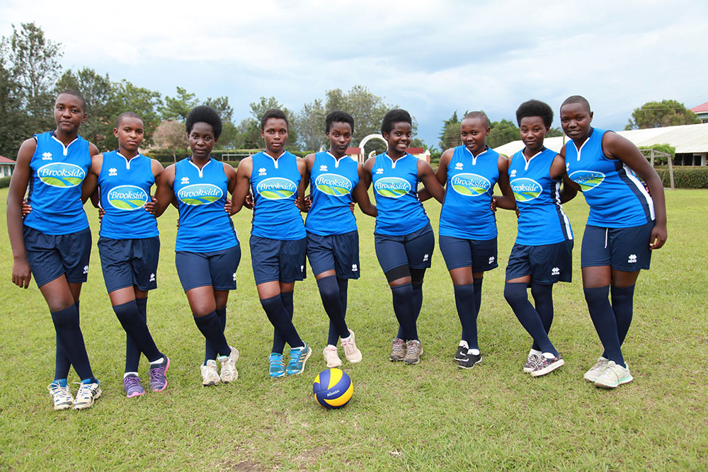
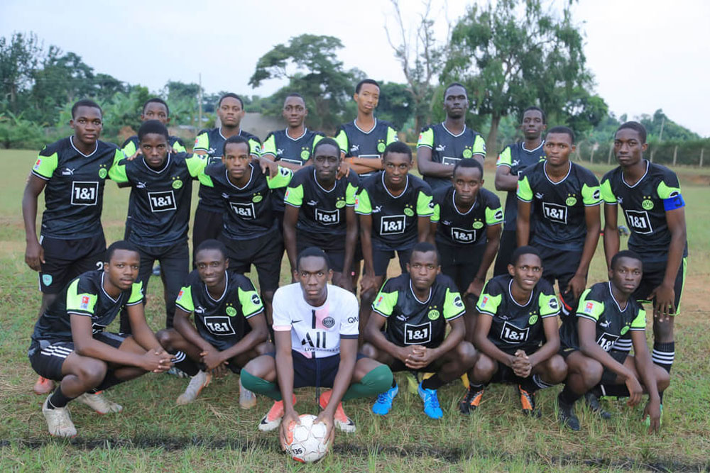
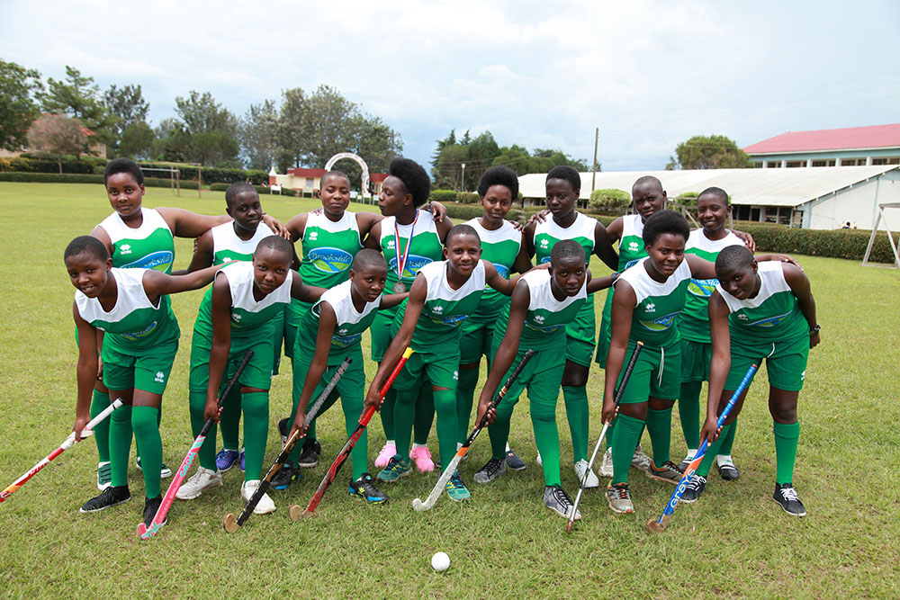
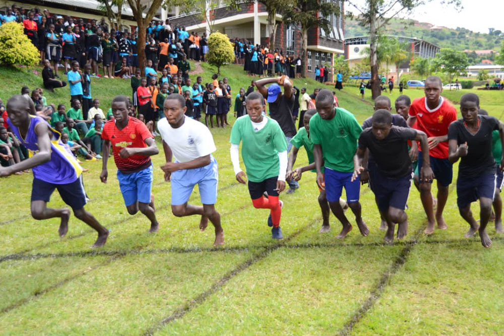

REDEEMER - CULTURAL GALA

The Cultural Gala Event at Redeemer High School is an annual celebration of diversity, creativity, and talent. It is a highly anticipated event that showcases the rich cultural heritage of our students and brings the entire school community together for a night of music, dance, fashion, and food. At the Cultural Gala Event, students from different backgrounds and nationalities perform music and dance routines that represent their cultural traditions and artistic styles. They wear traditional costumes and use props and instruments that are unique to their culture, creating a vibrant and colorful atmosphere that is truly unforgettable.
Bakonzo Cultural Dance
Bamba social Culture
The Cultural Gala Event at Redeemer High School is a celebration of the diversity and creativity that make our school community unique. It is a time to come together, appreciate each other's cultures and talents, and celebrate the richness of our shared humanity. We invite all visitors to join us at this wonderful event and experience the magic for themselves.
The Cultural Gala Event is not only a celebration of cultural diversity, but also an opportunity for students to showcase their talents and develop their artistic skills. Students work hard to prepare for the event, practicing their music and dance routines, designing costumes and decorations, and coordinating with their peers to create a seamless and memorable performance.
In addition to the performances, the Cultural Gala Event also features a fashion show where students model traditional clothing and accessories from their home countries. The audience is treated to a display of intricate fabrics, embroidery, and patterns that reflect the beauty and diversity of the world's cultures.
The event also includes a cultural food fair, where students and their families share traditional dishes and delicacies from around the world. This is an opportunity for the school community to experience different flavors and culinary traditions, and to appreciate the richness and diversity of global cuisine.
REDEEMER - SPORTS DAY
 The Sports Day Event at Redeemer High School is an exciting and highly anticipated event that brings together students, teachers, and parents to celebrate athleticism, teamwork, and school spirit. This annual event is one of the highlights of the school year and offers a fun and competitive way for students to engage in physical activity and showcase their athletic abilities.
 During Sports Day, students compete in a range of different athletic events, including track and field, football, basketball, volleyball, and relay races. These events are designed to challenge students' physical abilities, promote teamwork, and encourage healthy competition. Students are encouraged to participate in multiple events, which helps them develop their skills and build their confidence.
 In addition to the competitive events, Sports Day also features fun and entertaining activities that encourage participation from all students. These include tug-of-war contests, obstacle courses, and dance-offs. These events help create a fun and festive atmosphere and foster a sense of camaraderie and community among students.
 Sports Day is not just about the competitive events and activities, it is also a time to celebrate school spirit and pride. Students are encouraged to wear their school colors and cheer for their classmates and teams. The event brings together students from all grades and backgrounds, promoting a sense of unity and shared experience.
REDEEMER - STUDENT CAMPAIGNS
The Student Leadership Campaigns Event at Redeemer High School is an annual event that promotes leadership development, encourages students to take on leadership roles, and fosters a sense of community and responsibility within the school. During the event, students campaign for leadership positions within the school, such as student council president, vice-president, secretary, and treasurer. These positions give students the opportunity to represent their peers and to work with school administrators to make decisions that impact the school community. The campaign process encourages students to develop important leadership skills such as public speaking, collaboration, and critical thinking. Students are required to create campaign materials, give speeches to their classmates, and engage with the school community to gain support for their candidacy.
Once the campaigning period is over, students participate in an election process where their peers vote for the candidate they believe is best suited for the position. The winners of the election are then announced during a special assembly, and they begin their term as student leaders. The Student Leadership Campaigns Event is an important part of the Redeemer High School experience, as it allows students to develop leadership skills that will serve them well in their future careers and personal lives. It also fosters a sense of community and responsibility within the school, as students take on leadership roles and work together to make the school a better place for everyone. At Redeemer High School, we believe that every student has the potential to be a leader, and we are committed to providing opportunities for our students to develop their leadership skills. The Student Leadership Campaigns Event is just one example of how we encourage our students to take on leadership roles and become active members of their communities.
REDEEMER - BLESSING DAY
The Praying for Candidates Event at Redeemer High School is a special event that takes place every year to show support for the students who are taking their final exams. This event is an important part of the school's culture and helps to create a positive and supportive atmosphere for the students during a stressful time. We invite all visitors to join us at the Praying for Candidates Event and experience firsthand the power of our school community coming together to support our students during a crucial time in their academic journey.
During the Praying for Candidates Event, students, teachers, and staff come together to pray for the success of the students taking their final exams. This event is a time for reflection, encouragement, and support as everyone in the school community comes together to show their care and concern for the students. The event begins with a prayer led by the school chaplain, followed by a time of quiet reflection and meditation. After this, everyone in attendance is invited to write messages of support and encouragement for the students on a banner or a wall. These messages are a reminder to the students that they are not alone and that the entire school community is behind them.
The Praying for Candidates Event is a powerful way for the school community to come together and support the students during a stressful time. It is a testament to the school's commitment to fostering a culture of care, support, and encouragement for all of its students. At Redeemer High School, we believe that the success of our students is a shared responsibility, and we are committed to providing them with the support they need to achieve their goals. The Praying for Candidates Event is just one example of how we demonstrate this commitment and show our care and concern for our students.
REDEEMER - MORE EVENTS